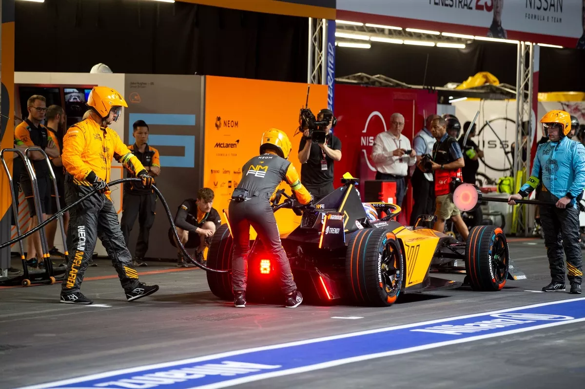

Brooks Running partners with Seattle Kraken for off-ice gear that’s perfected in a high-tech lab
"Seattle Kraken goalie Joey Daccord runs on a
treadmill while having his oxygen consumption levels measured in the Run Research Lab at Brooks Running headquarters in
Seattle on Wednesday. (GeekWire Photo / Kurt Schlosser)"
More than 100 years ago, Seattle-based Brooks Running actually made ice skates. While there’s
no intention of getting back into that line of business, the company is announcing a new partnership with the
Seattle Kraken as official supplier of off-ice footwear and apparel for the NHL franchise.
In the multi-year deal — terms of which were not disclosed — Brooks replaces Adidas in outfitting Kraken players,
coaches and staff for their training needs. Brooks will also support the team as needed through the high-tech Run
Research Lab that it operates at its headquarters building on the north end of Lake Union.
On Wednesday, Kraken goalie Joey Daccord, who will serve as a player ambassador in the partnership, was put
through the paces on a treadmill in the lab. An avid runner and longtime Brooks customer now in his sixth NHL season,
Daccord helped demonstrate how biomechanics and athlete insights are used to not only inform the development of products,
but also aid in training efficiency and injury reduction.
A team of about 25 Brooks employees works in the lab, where infrared motion-capture cameras ring
the ceiling and assess athlete movement via small sensors stuck to various points on the athlete’s body.
At one point, Daccord jogged at a steady pace for about two minutes while wearing a metabolic mask to test
his VO2 max capacities.
Pete Humphrey, head of research and development at Brooks, said everything at Brooks has
to be grounded in science with the goal of making athletes better and helping them enjoy the run.
“In the beginning, we had a little insole we put in a shoe. The lab was located in the same
room with our printer/copier machine,” Humphrey said. “We’ve grown it into what is today one of the
one of the most state-of-the-art facilities. This is the foundation of all product we build.”
Seattle Kraken goalie Joey Daccord’s data is collected from a Run Research Lab treadmill by Brooks employees
as Todd Humphrey, left, the Kraken’s senior vice president of digital and fan experience, observes.
(GeekWire Photo / Kurt Schlosser)
The treadmills in the lab are running about 300 days out of the year, sometimes with high-level athletes
like Daccord or members of the Brooks professional team, or with ordinary runners and walkers. Each product
goes through anywhere from three to seven iterations, depending on the innovation involved.
Data coming off the treadmill might help engineer a shoe midsole so that it works best with an athlete’s body.
Cushioning, energy, return, release, and support information is all used to build a shoe from the athlete up,
versus just putting a shoe on a runner and hoping it works.
“It’s all about the athlete from start to end,” said Jennifer Sumner, director of run research at Brooks.
“That’s going to be understanding how they’re moving from the outside, and then what’s actually happening
inside their body as well.”
Sensors stuck to the foot and leg of Seattle Kraken goalie Joey Daccord help measure his
performance in Brooks running shoes on a treadmill at the company’s headquarters.
(GeekWire Photo / Kurt Schlosser)
Following the demonstration with Daccord in the lab, Brooks and the Kraken held a post-game “press conference”
higher up in the HQ building. Joined by more than 100 Brooks employees, Brooks CEO Dan Sheridan and Kraken CEO
Tod Leiweke discussed their appreciation for each others’ brand and their excitement about working together and
serving the community.
Sheridan, who has been at Brooks since 1998, assumed the CEO role six months ago, succeeding Jim Weber, who spent
more than 20 years in the top job.
Leiweke, a lifelong runner with seven marathons and a few Mount Rainier climbs under his belt, said he was looking
forward to wearing his Brooks gear at Kraken games.
“We get to wear not just a shoe we believe is trustworthy and all of those things, it’s a shoe we’re proud of,
because you have a culture here that is so unique and so special,” Leiweke said.
Brooks CEO Dan Sheridan, right, accepts a Seattle Kraken jersey from Tod Leiweke, the team’s CEO,
at Brooks Running headquarters in Seattle on Wednesday. (GeekWire Photo / Kurt Schlosser)
Started in 1914 in Philadelphia, Brooks is the oldest American sporting goods company in the U.S. The company made
its move to the Northwest in 1993 and to its current location along the Burke-Gilman Trail on the Fremont-Wallingford
border 10 years ago. The company now employs 550 people in Seattle and 1,400 worldwide, and will occupy part of a
second building being built next door.
A subsidiary of Berkshire Hathaway, Brooks reported record revenue in the second quarter, up 15% year-over-year.
It has the highest market share in the adult performance running footwear market for U.S. retail. The company
said its e-commerce revenue grew 22% year-over-year in the first quarter.
Brooks-Kraken-branded gear will eventually make its way into team pro shops for fans to purchase. And Brooks
branding will also show up in Climate Pledge Arena and during televised games, via digital displays.
So why pair a longtime running brand and a 3-year-old pro hockey team?
“Run is at the center of every performance athlete’s training — doesn’t matter what sport you’re in,”
Sheridan said. “What we know as a universal truth is that athletes choose to run for their training, and
the biggest fear that an athlete has is injury. So we spend every waking hour on the biomechanics of human
motion, the kinesiology and physiology of how to make a run better for the athletes.”
Inside the Spurs' generative AI pilot program for 150 employees, including unique use cases
Noah Graham/NBAE via Getty Images
To foster a healthy shift in employee comfort levels with generative AI, the Spurs are currently leading an
internal pilot program with various learning opportunities using OpenAI’s ChatGPT.
Spurs Sports & Entertainment Director of Innovation and Strategy Charlie Kurian told SBJ that 150 employees are
taking part in the program, which started in October along with the team’s yearlong ChatGPT Enterprise contract.
Kurian added that the Spurs have taken a “human-centered lens” to this program after finding that two-thirds of
surveyed employees said they were interested in using GenAI but “a very small percentage” actually used it.
“Rather than ‘Hey, let’s figure out the best use cases and go chase the use cases,’ we looked broadly,” Kurian said.
“How do we change the culture and enable people to work in this space?”
The program is catering to both frequent and first-time users, Kurian said. The Spurs have worked with OpenAI to
create structured learning modules, holding different sessions that range from intros to ChatGPT and large-language
modules to building custom GPTs.
Kurian said that more than 50% of pilot users are active, and on top of the 150 participants, another 50-to-60
employees are currently waitlisted for ChatGPT usage. The Spurs are planning an in-house demo day in March to
showcase some of the most creative use cases with GenAI. “Culturally, it’s been great,” Kurian said. “And I think
that's because we alleviated the pressure that we need to arrive somewhere with it today.”
Unique use cases from the pilot so far
One early use case that stands out from the program’s first six weeks is the creation of a custom GPT called Spurs
Legacy. Kurian said the GPT came from repurposing the 50-part docuseries the franchise created in honor of its 50th
year (the 2022-23 season). The Spurs used the GPT to transcribe every installment of the series and created a team
culture expert that can provide long-term context to fan questions.
Kurian also added that the merchandise team used ChatGPT to suggest user interface changes for one of their websites
– using the tool to also generate HTML code to make those changes. That website project, Kurian said, had been a
multi-year process now boiled down to roughly 15 minutes.
These two examples point to the larger goal that Kurian sees with this – using ChatGPT to create different
problem-solving thought processes.
“I think our industry is so cyclical, and for the right reasons: we're very busy,” Kurian said. “... There is very
little time for people to be heads up. And I think giving the space to be able to spark curiosity here is something
that -- forget about the efficiencies and all -- I think it's a great opportunity to be able to upskill and create
opportunity for our organization.”
what fans like – and don’t like – around GenAI
The Spurs’ usage of GenAI started in 2018, Kurian said, through relationships with Conversica (provider of marketing,
sales and customer service digital agents) and Satisfi Labs (front-facing information assistants).
“We knew how transformational it was, but at the same time, our organization has always had the mindset of not having
the perfect answer, but just let's go test and learn,” Kurian said.
When ChatGPT launched in late 2022, the Spurs rolled out a feature called FanGPT, which was presented as standalone
kiosks in Frost Bank Center where fans could ask questions about the amenities there. The team rolled out this activation,
Kurian said, because fan feedback revealed a difficulty in navigating the concourse. What did the Spurs learn from that?
Fans didn’t enjoy the kiosk experience.
“They just didn’t care about it,” Kurian said. “To be better said, the learning was that when fans have paid so much money
to come watch the games, they’re not looking to stand at a kiosk and talk to a screen.”
This eventually led to a more recent rollout called Arena Navigator, a team app and web portal developed with Fresh Labs
for fans to maneuver around the three-level venue. That evolution encapsulates the Spurs approach around tech and GenAI:
Kurian pointed to it as a willingness to test and learn.
“I think our organization will continue to double down here very deeply,” Kurian said of GenAI. “I have one of our teams
that is actually figuring out a way to make this accessible for all of the staff that are not even part of the pilot
program.
“So there's been a natural leaning-in here while bringing people along and creating every opportunity for people that
might not feel the same way.”
Microsoft’s new open-source AI solution will beam wildlife data from remote corners of the world
A prototype of the open-source SPARROW device, system, and solar array. (Microsoft Image)
Microsoft’s AI for Good Lab this morning unveiled a new open-source project and AI-powered edge computing
device designed to improve biodiversity monitoring, with the goal of helping outside researchers better
understand the planet.
It’s called Project SPARROW, for Solar-Powered Acoustic and Remote Recording Observation Watch. It’s
the first project of its kind from the lab, which is part of Microsoft Philanthropies, separate from
the company’s product groups.
The project includes blueprints for a solar-powered device equipped with advanced sensors, including camera
traps and acoustic monitors. Microsoft says this enables SPARROW to operate autonomously with minimal
environmental impact. Researchers will be able to reprogram the devices remotely, for example.
Microsoft says it will open-source all aspects of SPARROW, including software, hardware plans, and 3D-printable
designs, so researchers, NGOs and scientists can build, deploy, and adapt their own SPARROW devices.
SPARROW uses onboard AI to filter data collected from sensors like cameras and acoustic monitors. Only
essential data will be transmitted via satellite, preserving bandwidth and energy consumed by those transmissions.
Juan Lavista Ferres, Microsoft corporate vice president, chief data scientist, and AI for Good
Lab director, at his desk in his Redmond office. (GeekWire File Photo / Todd Bishop)
“If this works, and I hope it will, and it gets adopted, it will change the way [scientists] work,” said Juan
Lavista Ferres, the chief scientist and director of the AI for Good Lab, in an interview this week. “Suddenly,
you will have all these sensors across the world, and they will be able to understand how is the world changing.”
In addition to making the project open-source, he said, Microsoft will ensure that the data is owned by the
participating researchers, not by the company. At the same time, Microsoft is encouraging researchers to share
the data collected on SPARROW devices with others, and it’s offering to help them create and distribute open
data sets.
He said the project is an outgrowth of more than five years of work between the AI for Good Lab and researchers
who collect and analyze data about endangered wildlife and ecosystems around the world.
Previously, Microsoft was helping largely with the analysis, but it realized that the collection could also
benefit from technology.
Microsoft plans to deploy its own initial SPARROW devices to sites in North and South America over the next
few months, to test and refine the solution. Its goal is to have devices on every continent by the end of 2025.
Next level: How virtual reality training can become a game changer for athletes
Virtual reality (VR) has grown enormously in importance in recent years and is increasingly being used
in various areas of our society, including education, medicine, the military and entertainment. Experts
see a particularly promising field of application in the training of athletes. To what extent does the
future of training and competition preparation lie in virtual reality? Can the efficient use of VR even
make the decisive difference in the end?
To make one thing clear in advance. Talent and perseverance in training cannot be replaced by the use of virtual
reality. Endurance athletes will need to train many hours a week to improve their maximum oxygen capacity or anaerobic
endurance capacity. Similarly, training on the ball is essential for professional footballers; for gymnasts,
it is the uneven or balance beam. The use of VR in training is generally intended as a supplementary tool. Virtual
reality training enables athletes to develop, improve or even perfect skills in a controlled and realistic environment.
This has many advantages.
The benefits of virtual reality for athletes
Realistic simulations:
VR allows athletes to simulate realistic training situations without the risk of injury or fatigue.
For example, soccer players can play through various game scenarios in a virtual environment, test
their decisions under pressure and analyze the tactics of their opponents. Tennis players, on the other
hand, can practise their serves and returns. Such simulation-based training methods help to improve technical
skills and optimize reaction times.
Improve automatisms:
In VR, specific game situations can be repeated as often as required. This is particularly useful for
refining certain techniques.
Tactical analysis and match preparation:
Coaches can record game scenes and re-enact them in a virtual environment to give athletes a better
understanding of their opponent's strategies. This type of analysis helps athletes to better prepare
for upcoming matches and refine their own style of play.
Analyzing performance:
VR systems can collect data on athletes' movements and reactions, which can then be used to analyze
performance. These analyses help coaches to provide targeted feedback and optimize training plans.
Mental training:
VR tools offer athletes* the opportunity to train their concentration and stress management in simulated
competition situations. By replicating the pressure of competition, athletes can learn to deal with
nervousness and distractions.
This is particularly important in sports such as tennis, golf or shooting, where the mental aspect often
makes the difference between winning and losing.
Rehabilitation after injuries:
Tailored VR programs allow athletes* to improve their movement and strength while training their balance
and coordination without having to overexert themselves physically. This not only helps in rehabilitation,
but also in preventing future injuries. So much for the theory. But in fact, new training opportunities
have opened up for many athletes in practice. Compared to conventional computer screens, VR technology
enables much greater immersion in the virtual environment. The separation from the real world and
high-fidelity software lead to a much more intense and physical experience compared to simply "viewing"
video and application content on a conventional screen.
Virtual Reality bietet viele Vorteile für Athlet*innen
Image credit:Liu Zishan/Shutterstock.com
VR training in practice
VR is already part of training practice at the Austrian Ski Association. Ski racers use VR goggles to relive and
analyze races they have already completed or to prepare and practice for upcoming races. That's smart, because
every downhill run holds
ski racers* a certain risk of injury. This use of VR also saves resources. This small example alone shows the
potential of this technology.
A few years ago, VR glasses were used in a study at Bishop's University to improve decision-making in young
basketball players. Participants were shown videos of set plays and had to decide which action they would take next at the end of the clip. Players who had watched the videos in VR made significantly better decisions on the court than those who had only watched the moves on conventional screens.
The DFB Academy also identified improved decision-making as a use case in a two-year project with the U16
juniors. By creating a 360° world with images from a real game, the players are supposed to concentrate on
the preliminary orientation. Although they have to physically look around, they don't have to move in any other
way, so the training is very low-impact. Toni Kroos was a master of pre-orientation during his active
career, as he knew where to pass the ball at all times. An important skill for professional footballers who
want to be among the world's best.
Especially in sports such as soccer, where making the right decisions is of great importance, VR can be
used to explore all decision-making options with the help of artificial intelligence (AI). Here you can
experiment with different passing or running decisions to find out how they would have changed the outcome
of the respective game scenario. AI algorithms could use the information about the time before the decision
was made to simulate what would probably have happened with any other possible decision. Highly complex, highly
technical and highly exciting.
Der Einsatz von Virtual Reality im Fußball
Image credit:Jacob Lund/Shutterstock.com
Tennis star Alexander Zverev combines neuroathletics with VR goggles
Individual sports have also long since picked up the ball. Mischa Zverev, former professional tennis player,
manager and brother of Alexander Zverev, reports on the methods and effectiveness of VR training in tennis.
"We focused on a combination of VR glasses and practice-oriented neuroathletic exercises. We quickly realized
the effectiveness felt the effectiveness. Basically, the aim is to improve the movement patterns of a body
that are not possible with conventional training methods. The great opportunity of the virtual exercises
with the glasses is that they are playful and we can use the data collected to make the exercises sustainable,"
says Mischa Zverev.
His brother Alexander Zverev has just won the Masters in Paris and is now ranked number two in the world.
For Alexander Zverev, neuroathletics and coach Lars Lienhard are an important part of his success.
Neuroathletics training with VR glasses has several advantages for Alexander Zverev. Firstly, it allows him
to train automatisms, which are particularly important in tennis. On the other hand, VR training also has a
very practical advantage when it comes to training with individual coach Lienhard: "Lars only exists once in
the world and whether you're in New York or Australia, he can't always be in the same place. With the VR glasses,
I can still train with him."
Alexander Zverev is working together with IMPROVR. The Munich-based company specializes in athlete training
with VR and relies on software that is primarily designed to improve cognitive skills. The two Zverev brothers
will give more insights into this at ISPO Munich 2024, where they will be guests on December 4 and explain
how to "train intelligently" these days.
Not everything that is possible virtually is good in real life
Despite all the possible applications and potential advantages over conventional training methods using video,
VR training should not be overused. Sessions longer than 30 minutes can cause nausea or headaches, known
as cybersickness. This often happens when there is a mismatch between what viewers see and what is reported
back to the brain via the sense of balance in the inner ear. Even though the hardware is generally becoming
more affordable and lighter, current VR glasses currently weigh between 500 and 600 grams. This can lead
to discomfort during longer training sessions as it puts too much strain on the athlete's neck muscles.
This can be counterproductive, especially when it comes to training automatisms.
Experts currently also advise against using VR to train fine motor skills. A lack of haptic feedback
and imperfect "pseudeo" realism can lead to movement patterns being rehearsed incorrectly. Mischa Zverev
also knows that training with VR must always be reviewed and that its use and development is only just
beginning: "It should always be seen as a supplementary training tool. VR certainly doesn't replace existing
training! But it can be used to train movement patterns of the body that cannot be achieved with conventional
training methods." However, the handling and use of VR training must be viewed with caution. "Neuro-centered
training and VR technology are two new, modern components that need to be combined. In the end, it all comes
down to the effectiveness for the athlete. And we are constantly working on this," says Mischa Zverev.
A look into the future
It is difficult to say where the limits of VR training lie. What is certain is that not all areas of application
have been exhausted. There are speculations that VR developers may also consider the use of bodysuits and
sports equipment with tracking functions.
This could pave the way for a realistic sports experience in a virtual environment. If the developers then
manage to implement vibrations in the hardware, this could potentially become a game changer. Bobsleighing
through the ice channel without being there yourself. A very smart idea.
It is to be expected that mixed reality via VR goggles will also find more interest and application in the
future. A 100-metre sprinter, for example, could virtually create an Olympic stadium on the training ground
to simulate the most important competition of the year in her daily training. Full stands, cheering spectators
- everything as close to reality as possible. Imagined scenarios and processes can be played out and serve as
mental replays of possible real events. Dealing with performance pressure and fears before the competition,
practising routines, stress management and emotion regulation - sports psychologists are already adjusting
their glasses. VR training as a game changer? The potential is there and it's real.
How to Ride an Electric Bike
While not a new invention, electric bicycles have only recently become more of a household name.
E-bikes are increasing in popularity for good reason, but there are a lot of people who have understandable
reservations. When you grow up riding something as standard as a classic Schwinn bike, trying an electric
bike can feel somewhere in between exciting and nerve-wracking. But do not fear! Our blog is coming in hot
with a play by play on how exactly you ride an e-bike.
Rest assured, riding one of Schwinn’s e-bikes will quickly feel just as second nature as riding the
traditional (or analog) bike you’re used to. In fact, we’re pretty sure you’ll end up preferring it to
your old bicycle.
Step-by-Step Guide to Riding an E-Bike
Charge the e-bike battery
Keep in mind, you can ride a Schwinn e-bike without any power at all, just like you would an analog bike. But,
that won’t give you the true electric bike experience!
Your e-bike comes with a battery, a charger, and a charging cord. Plug the cord into the charger, then plug
it into the battery and, finally, plug it into the wall. The battery can be charged while it is on the bike, or
you can remove it to charge the battery in a different location, like your office after commuting to work. A
light located on the battery will turn on to let you know that it’s charging properly.
Understand the pedal assist system (PAS)
The Pedal Assist System, or PAS, is a feature of your e-bike that provides extra power behind each pedal.
It all runs through the LCD display located on the handlebars, from here you can toggle between one of 7
levels of assistance and turn on the PAS. Once you turn it on, the system engages each time you pedal on the
electric bike. If you don’t press the power button to turn on the PAS, it will feel like you’re riding a
regular bike when you pedal.
While your e-bike battery is charging, take a moment to study up on the PAS. A couple things to review:
Find the power button to turn on the display
Locate the arrows on the keypad
A Schwinn e-bike only activates extra power when you pedal and when a PAS level is turned on.
Get ready as you would for a regular bike ride
Prepare for your e-bike ride as you would for any other: put your helmet on, check your brakes
and seat height, and run through the regular pre-ride checklist.
Turn on the PAS
Once you get on your e-bike, hold down the power button for 2 seconds to turn it on. Press the
up arrow to choose the level of pedal assist you want. It’s perfectly fine to start low. You can
easily increase your assistance level when you feel more comfortable using the PAS and want to try
riding longer distances or going uphill.
Start pedaling
You’ll immediately feel a little extra “push” while pedaling with the PAS activated. Test it
out a little — stop pedaling and you’ll immediately feel that “push” wear off. Do this until
you feel comfortable to take your e-bike for a longer ride!
FAQs
Is riding an e-bike scary?
Riding around on electric bikes might feel a little surprising at first, but most people who try
it love it. One of the reasons it’s not scary (and not all that different from riding an analog bike)
is that you can turn off the pedal assist at any time, and that as soon as you stop pedaling, you lose
that extra power.
Do I have to brake differently on an e-bike?
You can brake the same on an electric bike as you would on any other bicycle. Some e-bikes come with
disc brakes which have extra stopping power, so you might not have to brake as hard. However, the method
of braking is exactly the same. And, since you brake while coasting (not pedaling), there isn’t any
extra power that would affect your braking.
What’s the difference between the throttle and the Pedal Assist System?
The main difference between the throttle and the Pedal Assist System is the force that is responsible
for moving the bike forward. With the throttle, the electric bike will accelerate under its own power
and does not require any pedaling to get going. This is accomplished with the hub drive motor on the
bike. Now, with the Pedal Assist System, the force responsible for going forward is you pedaling. The
motor still comes into play here and provides some assistance by giving an extra boost each time you
pedal. Using PAS, the bike will not accelerate without use of the pedals like the throttle does.
To sum it all up…
Just like we went from pushcarts to wagons and from wagons to cars, the evolution of the bicycle
is ultimately an exciting advancement. Riding an e-bike is a natural progression from riding an
analog bike — trust us, you’ll love it!
Pit Boost technology to debut in 2024/25 Formula E campaign

The Pit Boost concept which will require Formula E drivers to make a mandatory pitstop is set to
be implemented during races in the upcoming 2024/25 season, Autosport understands.
The technology, which means the new Gen3 Evo cars will receive a 10% battery recharge at 600kW
that will take approximately 30 seconds, has finally been given the green light after being in
development for the last two seasons.
Initially touted for the beginning of the Gen3 era in 2022, reliability and safety concerns
meant it has taken until now for the FIA and Formula E organisers to be satisfied and allow it
to be used during competition.
The concept was tested for the first time during a race at pre-season testing last month in Spain,
with the data from that simulation outing analysed by the championship and governing body.
Autosport understands that the concept has been given the go-ahead and will be implemented on
double-header weekends in order to vary strategies between each race at the same location.
Its first appearance is therefore set to come in Jeddah on a truncated version of the layout
used by Formula 1 on 14-15 February and will feature at further rounds including Monaco, Tokyo,
Shanghai, Berlin and London.
Pascal Wehrlein, TAG Heuer Porsche Formula E Team
Photo by:Andreas Beil
While Pit Boost is already part of the current sporting regulations, Autosport understands that a
tweak will be made to those regulations following a meeting of the FIA’s World Motor Sport Council
next week regarding how Attack Mode is used in conjunction with the new technology.
Alongside the 350kW of extra power from Attack Mode, which this year will activate all-wheel-drive,
the introduction of Pit Boost is set to add another strategic element to races but one which some
drivers are wary of in the event of a poorly timed safety car.
Ahead of this weekend's Sao Paulo season-opener, reigning champion Pascal Wehrlein warned: “We are
not allowed to box everyone at the same time, it's always one car per team.
"Half of the field, so 11 cars, are boxing on lap 15 and the other half is maybe boxing on lap 18,
but between those laps there's a safety car. It's a huge advantage for the second group.
“It's not like there's maybe one guy who would benefit or two guys, it could well be that you could
end up from being in P1 completely out of the points, just because there was an unfair situation with a safety car.”